Islands
Islands Zanzibar is a popular beach destination located in the warm Indian Ocean, 35 kilometers (21.7 miles) off the east coast of Africa. It is an archipelago with sandy beaches, offering vacationers a variety of activities and attractions. Here, you can explore many beautiful islands, experience scuba diving, and relax on pristine beaches. Additionally, visitors go on spice plantation tours and excursions to the historic places where Arab, Indian, and African cultures merge. And, of course, the Zanzibar cuisine and luxury resorts will make the trip even more enjoyable.
In this article, we delve into the most exciting things to do in Zanzibar, helping you plan your dream beach vacation, whether you are looking to sip cocktails on quiet beaches or tour Zanzibar's wildlife parks, Stone Town, and the underwater world.
Geographically, Zanzibar is an archipelago consisting of several dozen islands. Some of those islands are large and have developed infrastructure, while others are tiny and uninhabited. Often, the name refers to the largest island, Unguja, measuring 30 by 80 kilometers (18.6 by 49.7 miles). That is where the majority of Zanzibar's population lives. Administratively, Zanzibar is not a separate state but a semi-autonomous region of the United Republic of Tanzania. In other words, Zanzibar is a part of Tanzania.
What is Zanzibar best known for?
Here is a list of some of the most popular attractions and activities in Zanzibar:
- The best beaches located in the north and east of the main island
- Stone Town — the historic part of Zanzibar City
- The national park and spice plantations
- Wildlife viewing in island forests and underwater
- Numerous spots for snorkeling and scuba diving
- Boat trips to secluded islets
- Visiting ruins and historical sites on the main island
As you can see, the Tanzanian islands attract all kinds of vacationers, from beach lovers and divers to those interested in culture and history. This ensures that if you plan a Zanzibar trip, you will have a rich array of activities to choose from. This allows you to tailor your Zanzibar holiday to your preferred pace.
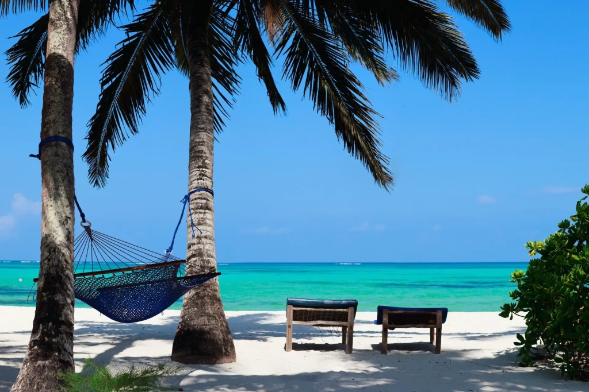
How many days in Zanzibar is enough?
How many days should you spend in Zanzibar? If you're only planning to stay on the main island, consider spending three days here. It will be enough for relaxing at a good beachfront hotel. Add a day or two for walks and excursions in Stone Town, located a couple of hours' drive from the Zanzibar beaches. Stone Town is the historical part of the Zanzibar City, where all buildings are made of coral limestone. We recommend you spend a night in the historic Stone Town at one of the beautiful old-building hotels.
Where to stay in Stone Town?
There are numerous accommodation options in Zanzibar Stone Town. One of the most interesting is the 5-star Park Hyatt Zanzibar Hotel, situated on the oceanfront. It combines a luxurious 17th-century mansion with a modern comfortable building. Tembo B&B Apartments — a 4-star hotel, is located in the Shangani area. Another option is the 3-star hotel Zanzibar Coffee House. The hotel building was built by the sultan's vizier in 1885 and is surrounded by other similar buildings. They constitute a UNESCO World Heritage Site. Among guesthouses, we can recommend Malindi Guest House with rooms ranging from single to quadruple occupancy. It is located in the port area of the city.
If you want to add a trip to the local national park, visit a spice plantation, the Giant Tortoise Island, or go snorkeling near the stunning Mnemba Island, then plan for a few additional days. If you wish to explore beyond the main island, such as diving or studying the local flora on Pemba or Mafia islands, allow for several more days. In summary, we recommend allocating 5–7 days for a leisurely vacation in Zanzibar, not including time for underwater activities.
When is the best time to visit Zanzibar?
Zanzibar in East Africa experiences two rainy seasons per year, with mostly dry months in between. The rainiest periods are typically in April-May and November-December. During other months, showers are usually brief, and the sun shines almost daily. Average daytime temperatures hover around 28 °C (82 °F), often reaching up to 35 °C (95 °F).
It's important to note that "rainy seasons" are somewhat variable. Sometimes, during what is traditionally the rainy season, several days or even weeks may pass without any rainfall. Moreover, recent years have seen shifts in the usual weather patterns, slightly altering the timing of these seasons. A brief article on our website provides more insights into the best times to visit Zanzibar.
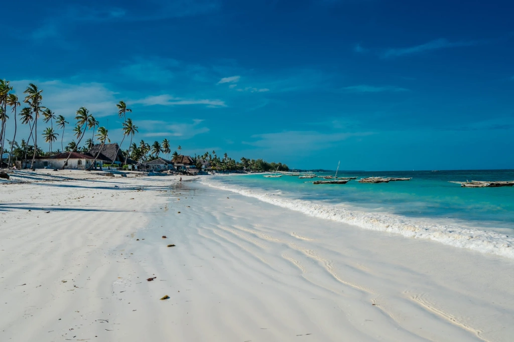
What to pack for Zanzibar?
The climate in Zanzibar is typically sunny, hot, and humid. It's wise to think ahead about what to pack, taking not only the weather but also the local cultural norms into account. Since Zanzibar is predominantly an Islamic region, there are specific expectations regarding how people should dress, especially for women. However, it's worth noting that two-thirds of Zanzibar's Muslims are Sunnis, who are generally less conservative. Additionally, as Zanzibar has increasingly engaged with global tourism, life there doesn’t strictly adhere to the norms found in more conservative Muslim countries.
For tips on what you might need on the islands, refer to our article "What to take for a beach vacation in Tanzania?" Meanwhile, let's take a look at the main island’s beaches.
Beaches of Zanzibar Island
The most popular and accessible beaches on the island of Zanzibar are located on the northwest coast. There are two main beaches there, Nungwi and Kendwa, favored by vacationers due to their minimal tidal impact. Nungwi is considered the most prestigious and upscale beach.
However, the hotel where you choose to stay might matter even more than the choice of a specific beach. For instance, on the southern tip of the island, where tides make sea access more challenging, there's a luxury hotel – The Residence Zanzibar, which includes all amenities for a top-tier vacation, such as a private pier, compensating for any natural inconveniences.
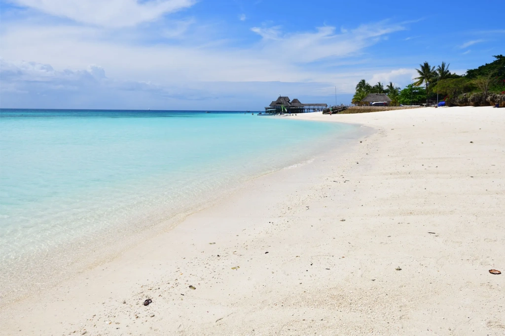
The south and eastern coasts of the island are most affected by tides. For example, at Chwaka Bay, the water recedes up to 2000 meters (1.24 miles), which can be quite significant. Despite this, beaches like Paje and Jambiani on the southeast coast remain popular. Paje is renowned for its strong winds, making it an ideal spot for , and attracts many enthusiasts of this sport.
The least suitable beaches for relaxation due to tides are Chwaka and Charawe. During low tide, the water recedes dramatically, up to 1.5–2 kilometers (0.93–1.24 miles). To better understand the tides and learn about nearly all the beaches on the island, you can read our article about tides and tidal patterns in Zanzibar. It also serves as a great guide to the island’s beach spots.
Stone Town
Stone Town is located on the west coast of Zanzibar Island. It's called "Stone Town" because the buildings are made from coral stone in shades of white, giving it a true southern, bright, and airy Arabian city feel. Some of its streets may remind visitors of the fictional city of Agrabah, where Disney’s Aladdin lives, albeit without the giant domes. Stone Town is packed with palaces of past sultans, and old merchant houses with stunning carved doors.
Despite its small size—less than one square kilometer—Stone Town is densely built with over 1,700 stone buildings, creating narrow streets and alleys. Not all buildings are residential; many serve as shops, hotels, restaurants, cafes, and museums. Choosing an interesting hotel and staying in a former palace is an experience we definitely recommend.
Stone Town's character was largely shaped by people from Oman and India. You'll notice many Arabian and Indian architectural features during your day trips and evening walks through the old town. The influence of exotic Africa is also evident here. The coastal East African culture, known as Swahili, like the language spoken by the locals, is also prevalent here.
Interestingly, English is also widely spoken here. It is a vestige of the period from the second half of the 19th century to the 1960s when Stone Town was under significant British political and cultural influence. This area still bears the marks of renowned British explorers of Africa such as David Livingstone and Richard Burton. British naturalist and official John Kirk also left his mark here. Piliocolobus kirkii (Zanzibar red colobus), a species of beautiful primates endemic to the island, is named after him.
Notably, Freddie Mercury spent his childhood in Zanzibar. Today, you can find a small museum set up in the house where the boy destined to become a rock star lived with his family.
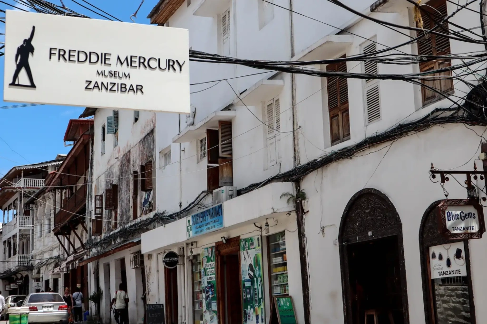
Besides the Freddie Mercury Museum, Stone Town is worth visiting for the old Arab Fort and climbing its ancient walls, touring the beautiful Anglican Cathedral built on the site of the former largest slave market, and admiring St. Joseph's Cathedral, a magnificent building erected by French missionaries. We recommend visiting it for those who travel the world in search of beautiful buildings and enjoy admiring graceful spires.
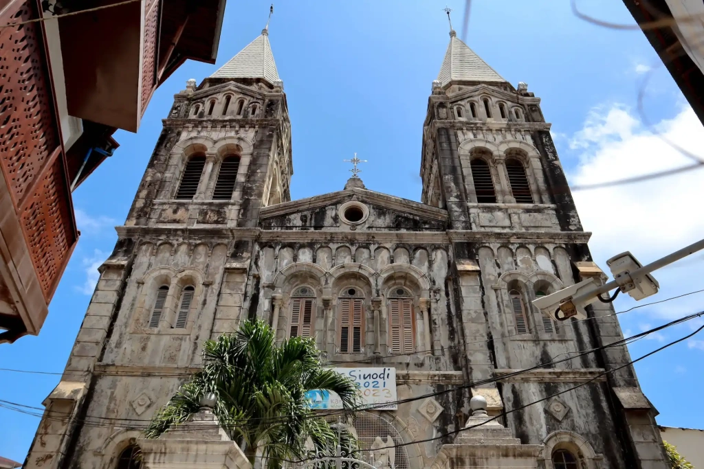
In Stone Town, you'll also find many other old houses and museums. For example, the Princess Salme Museum. The princess was the rebellious daughter of a sultan; she secretly learned to read and fled to Europe with a German merchant. We share many more interesting facts about Zanzibar's history and interesting sites of the city in our article about Stone Town.
Excursions on Zanzibar Island
The most popular excursions on the island of Zanzibar include:
- Tour of the spice plantations
- One-day trek in the Jozani Chwaka Bay National Park
- Sunset cruise trips and short boat rides
A spice tour to a plantation entails a trip into the interior of the island, where a variety of plants used in cooking are grown. It usually lasts 2–3 hours, so it can be combined with another activity on the same day.
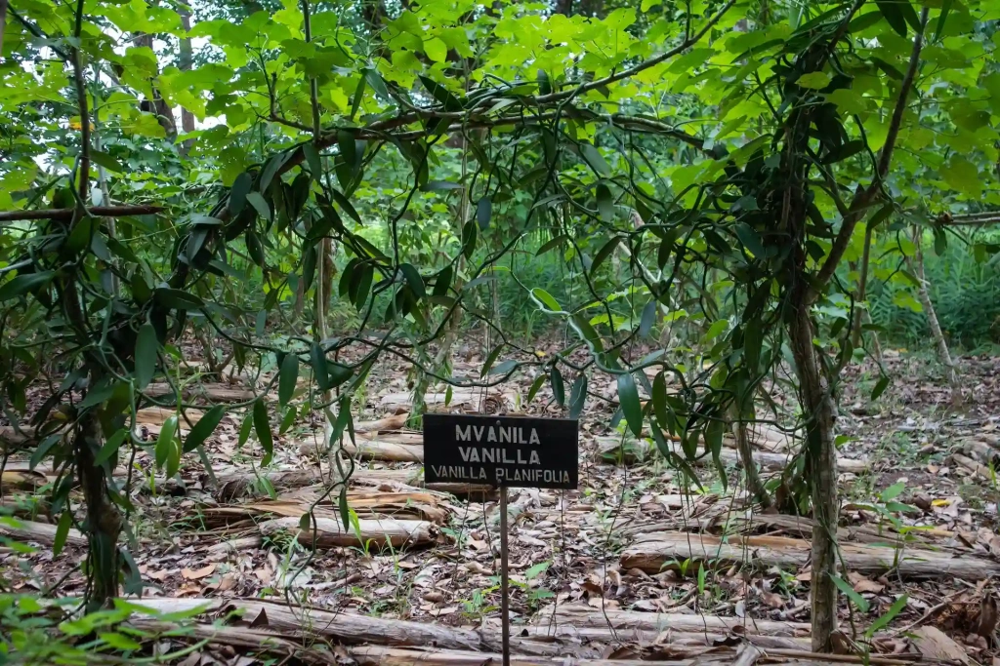
Historically, Zanzibar (along with the neighboring island of Pemba) was a global leader in clove production. It was even known as the "Spice Island". Today, cloves, cinnamon, black pepper, cardamom, vanilla, nutmeg, ginger, and other spices are still cultivated here, along with local tropical fruits. You'll learn about these and other plants, their beneficial properties, and their uses in folk medicine during the spice tour. Naturally, you'll have the opportunity to buy some spices for yourself and as gifts for friends.
The Jozani Chwaka Bay National Park spans 50 square kilometers (19 square miles). It is located between Stone Town and the Paje beach on the southern side of the island. Visitors typically walk along established trails for 2–3 hours. There are no predators in the park, so the walks are safe. The Zanzibar leopard once lived here, but it has not been seen for many years, although there are occasional speculations about its existence. We cover the Zanzibar leopard in another article.
In the national park, you can observe several unique animals, including the Zanzibar red colobus and white-throated monkeys. You might also spot the Ader’s duiker, a small antelope species that stands about 35 centimeters (14 inches) tall at the shoulder, among other wildlife. Additionally, some creatures like tree hyraxes and bushbabies, also known as galagos, are nocturnal and may be more elusive, but you are sure to hear them!
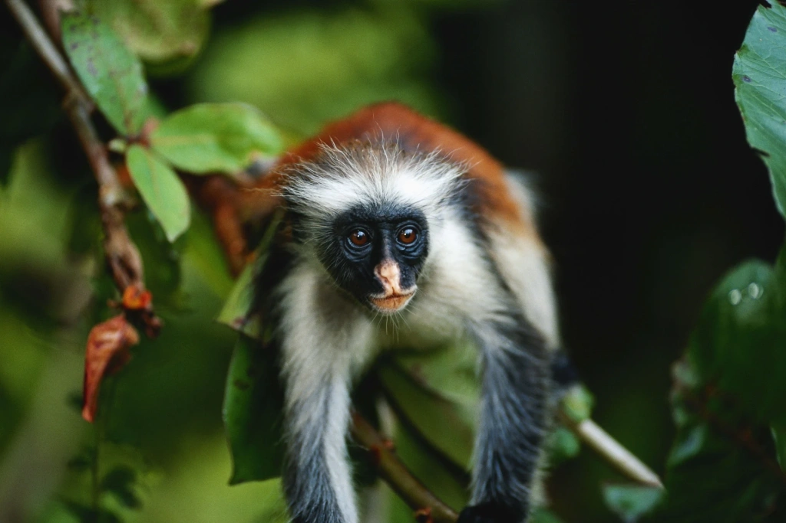
The park is also home to interesting birds like Fisher's Turaco, the Brown-headed Parrot, sunbirds with long curved beaks, the Bearded Scrub-Robin, the Mangrove Kingfisher, and other colorful species. Birdwatchers will find plenty to observe both in the park and along the coast. Learn more about the birds of the island in our blog post overview of Zanzibar’s avian species.
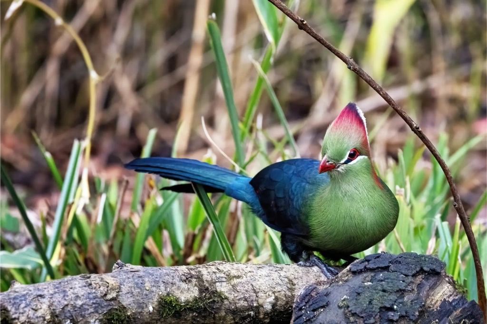
In addition to the spice plantations and the national park, you can visit other locations on the island to see interesting birds, animals, and plants. For example, the Kiwengwa/Pongwe Forest Reserve or the Zanzibar Butterfly Centre, located close to the national park. The island also features several natural caves, some with small bodies of water inside. Local tour organizers often include visits to these caves in their itineraries.
Those with an interest in Zanzibar's historic past can explore more than just Stone Town. Places like Mtoni Palace Ruins are worth visiting. These ruins, including other countryside residences and baths built for sultan families, are of particular architectural interest. Visitors can take atmospheric photos of the crumbling, plant-covered walls.
Another fascinating historical aspect involves the caves and special structures at Mangapwani Beach, which housed slaves brought from the depths of Africa for sale. In the past, Zanzibar was a major place where boats brought captive people and ivory. Stone Town hosted the largest slave market on the entire Swahili coast of Africa. Today, one can see where and under what conditions these captives, seized by Arabs from Eastern Africa, were kept.
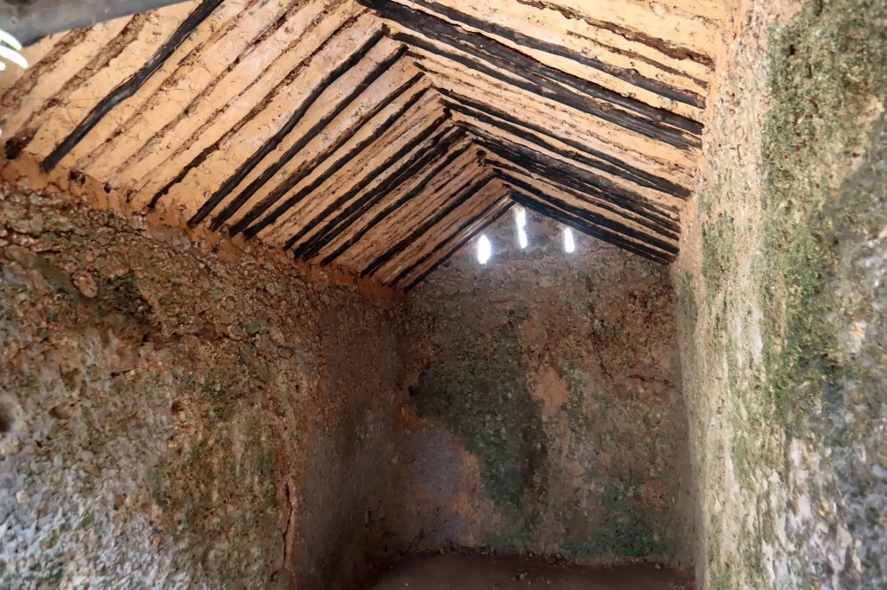
Excursions to avoid
It should be noted that in Zanzibar, there are several so-called turtle conservation and rehabilitation centers, which are actually classic contact zoos where children and adults can swim with sea turtles, feed them, and take pictures for a fee. The turtles are perfectly healthy; they are not being rehabilitated but merely exploited for profit. There are no plans to release them. Cheetah's Rock—a center that poses as a wildlife rescue service—operates under the same premise. We strongly recommend not visiting these places and not participating in the dirty business built on the exploitation of wild animals.
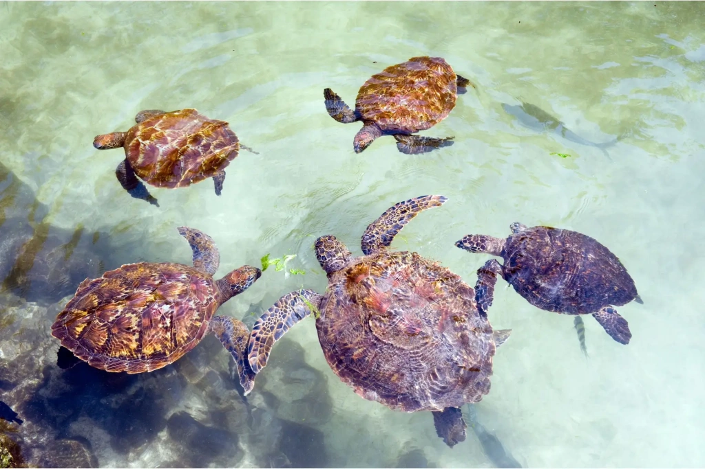
Snorkeling and scuba diving
The underwater life near the Zanzibar archipelago is astonishingly diverse. One can observe numerous colorful underwater plants and animals. Coral reefs stretch east of the island archipelago. Not only are they beautiful, but they also protect Zanzibar and other islands from dangerous sharks. Large fish rarely enter these waters, often limited to harmless whale sharks. Observing the underwater world of the ocean is a very popular recreational activity here.
Snorkeling in Zanzibar
Snorkeling—swimming at the surface of the water with a mask and snorkel—is popular both on the beaches of Zanzibar itself and away from the main island. Tour groups often take boats to other small islands and the coral reefs in the open ocean to enjoy this activity. The island of Mnemba is considered a real gem for snorkeling.
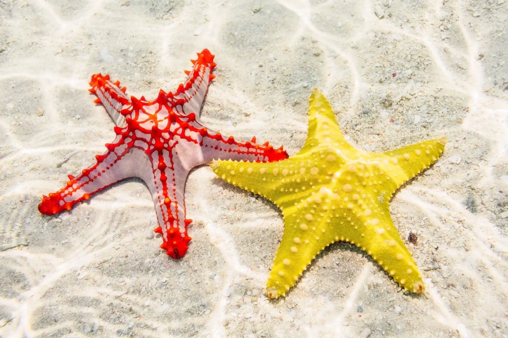
Important Warning: Starfish, often a fascination for beginners, cannot breathe and live if taken out of the water. Their respiratory system is such that they extract oxygen from the water. As soon as someone removes a starfish from the water, it begins to dehydrate and can quickly die. Some species of starfish can survive out of water for a few hours, but for many, just a few minutes can be fatal. Even touching a starfish can cause stress, leading to death within seconds. Please do not touch the starfish or remove them from the water. Inform children and everyone else on the excursion about this.
Mnemba Island, a private island, is closed to visitors and used for premium relaxation. However, the reefs around it form a marine conservation area. There are many corals surrounded by diverse species closely associated with them. One can see bottom-dwelling sea moths, strikingly beautiful Taeniura lymma rays, long-spined Lionfish, warty Stonefish, crabs crawling on anemones, long Trumpetfish, and many other ocean inhabitants. If lucky, you might also see octopuses.
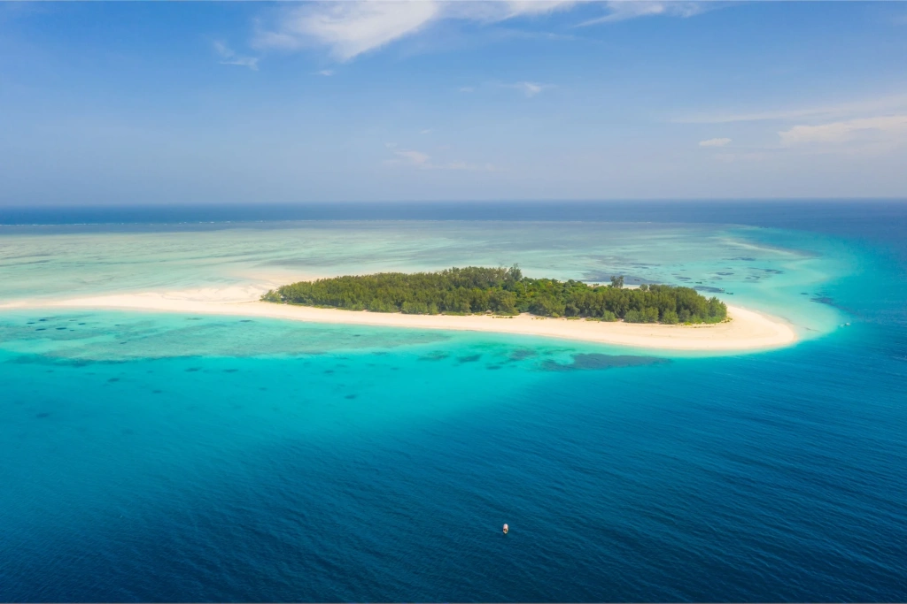
The larger reef dwellers around Mnemba are especially fascinating, including green sea turtles, dolphins, and on rarer occasions, you might see humpback whales and whale sharks. The emotions experienced during snorkeling are indescribable; it's something you must see and experience for yourself. Chumbe Island Coral Park is another private island with a national reserve.
Diving in Zanzibar
Diving experiences in Zanzibar are even more impressive than snorkeling. Dive centers are available on all the major islands of the archipelago, where certified scuba diving instructors ensure a high level of safety. One advantage of diving in Zanzibar compared to other popular diving destinations like Indonesia and Egypt is the smaller crowd. Although, some spots, like around Mnemba Island, can be quite busy. It’s advisable to inquire with dive centers about less crowded locations and the number of people in each group to ensure a comfortable experience.
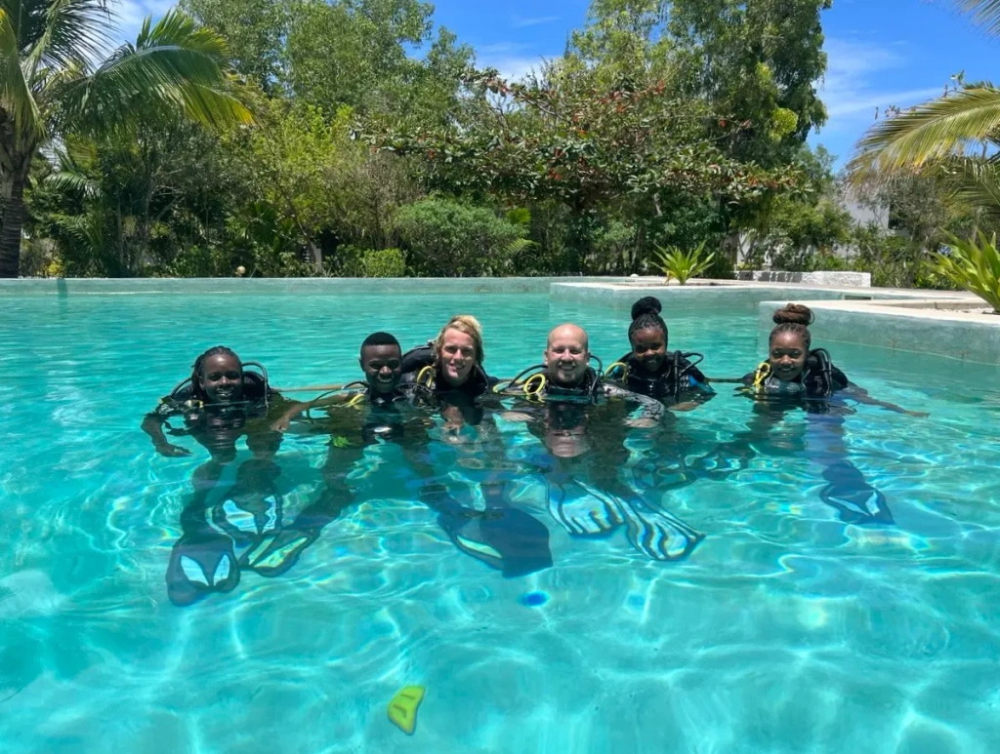
What are the best scuba diving spots in Zanzibar?
- Nungwi Beach on the main island
- Mnemba Island
- Pemba Island
- Misali Island
- Mafia Island
As previously noted, Nungwi Beach is least affected by tides. Another feature of this location is that it lies on the migratory routes of large ocean dwellers like sperm whales and humpback whales. The reefs in this part of the ocean are rich in biodiversity.
Near Mnemba Island, not only are the waters incredibly clear and ideal for snorkeling, but there are also several diving spots. Observing the vibrant coral life, fish, and other marine organisms is truly amazing. The pristine water, in beautiful shades of turquoise and blue, rivals and possibly surpasses the beauty of the famous beaches of the Maldives. From February to September, green sea turtles come ashore on the island to lay their eggs.
Pemba Island is the second largest in the Zanzibar archipelago. The waters around it host incredibly beautiful ecosystems built around coral formations. It's home to numerous oceanic fish, plants, and other forms of life. All that makes Pemba a hidden gem for diving in the Indian Ocean. Due to fewer tourists visiting for diving, the area remains relatively untouched. Still, there are several dozen great dive sites nearby. From August to October, you might occasionally spot majestic humpback whales. Dolphins can be seen year-round. Check out a diving video from Pemba filmed by our friends and partners at Afro Divers.
Not far from the large island of Pemba is the smaller Misali Island. Misali translates from Swahili as “prayer mat,” since the island is oriented towards Mecca. Being uninhabited, the natural environment here is preserved, from virgin beaches to the amazing underwater coral world. Visitors come by boat for day trips to enjoy diving in the crystal-clear waters of turquoise and blue hues. The area is home to 42 types of coral and about 300 species of fish. The beaches of the island also serve as nesting sites for two types of turtles: Green sea turtles and Hawksbills.
Around the larger islands of Zanzibar and Pemba, there are many smaller islands also suitable for diving and snorkeling. If you prefer solitude, you can ask organizers to take you to one of the secluded spots where you can immerse yourself in the mesmerizing natural beauty of the ocean.
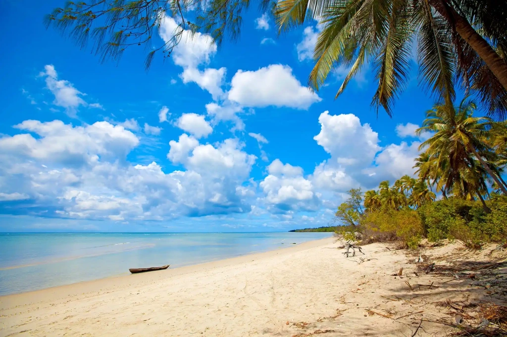
South along the coast of Tanzania lies another group of islands, technically not part of the Zanzibar archipelago, but worth mentioning. This is the Mafia archipelago with the main island of the same name and eight smaller islands. The underwater life around these islands is impressive, with about 40 types of coral and about 400 species of fish! Divers will be thrilled by the underwater life in this area. The waters around Mafia Island are part of a marine national park, the largest protected area in the Indian Ocean. Divers are highly recommended to visit Mafia Island and, if possible, several neighboring islands.
For more details about these islands, check out our article on the best diving spots in Tanzania.
Other islands near Zanzibar
In addition to the previously mentioned Mnemba, there are several small islands near the main island of the archipelago. Those are mainly attractive for their stunning and empty beaches, where you can swim in seclusion. Many such islands are located close to Stone Town. So, visiting any of them does not require additional days and can be easily included in your day's schedule in Stone Town.
The most famous and visited is certainly Changuu, also known as Prison Island or the Island of Giant Tortoises. Visitors primarily come to see the giant Aldabra tortoises. These creatures are rightfully named so for their impressive size. Adult individuals often exceed one meter (3.2 feet) in length and can weigh up to 250 kilograms (550 pounds). Being the second largest species of land tortoises in the world, they certainly make an impressive sight when seen up close in the protected area. The ethics of their captivity on Changuu, where they were introduced by humans, are debatable. However, if you are in Zanzibar, visiting Prison Island is an opportunity to witness these remarkable creatures. It's crucial to treat the tortoises with respect. Please, do not touch them, do not allow children to ride them, and avoid overfeeding them, no matter how tempting it might be.
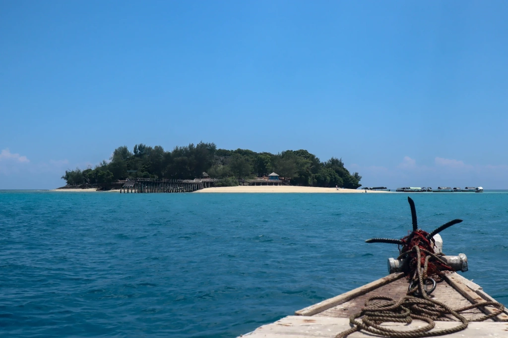
Changuu Island has an interesting history. Initially uninhabited, the Sultan of Zanzibar once planned to turn it into a prison from which escape would be impossible. Later, it served as a quarantine station for sailors arriving on ships from ports affected by cholera and bubonic plague. More about Changuu and what awaits you there is detailed in our article on the Prison Island.
For cultural experiences, you can visit Tumbatu Island. it’s the third largest in the archipelago, after Zanzibar and Pemba. Tumbatu is home to numerous ancient Swahili buildings. Local legends say the island was settled as early as the 12th century. To note, the oldest Swahili cultural monuments on Zanzibar Island date from the 6th and 7th centuries. The inhabitants of these places are members of the Hadimu people, who originally came to the islands from the African mainland. Even in the common language of Swahili spoken by all islanders, the Hadimu speak with a distinct accent.
Other small islands near Zanzibar are usually visited for beach relaxation. One such islet is Nakupenda, whose name translates from Swahili as "I Love You." For information about all the nearby islands and opportunities to visit them, do not hesitate to ask boatmen in Stone Town.
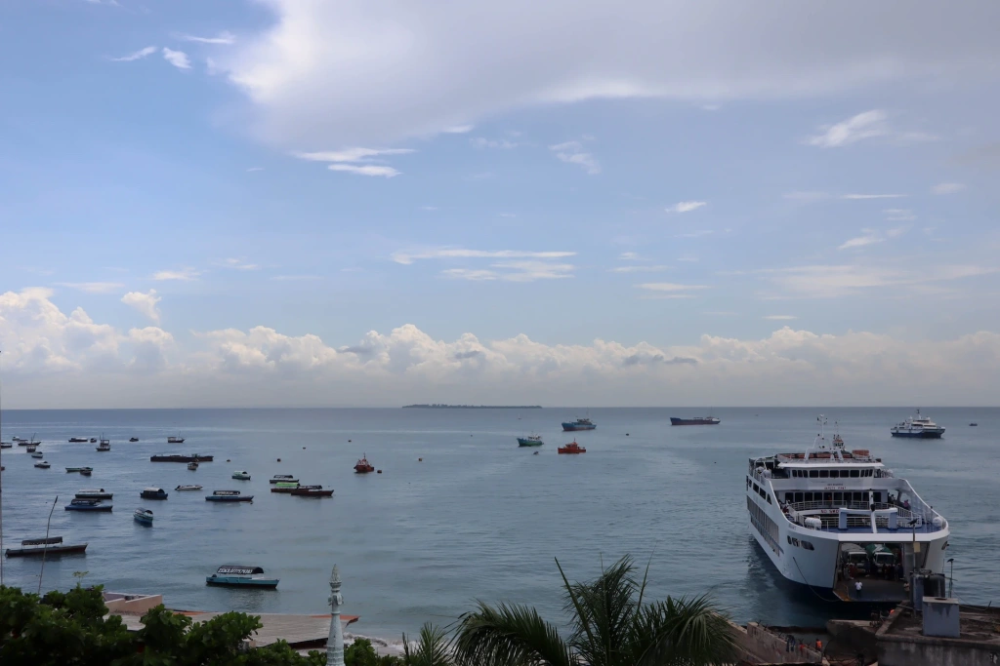
As you can see, things to do in Zanzibar include activities for fans of all types of vacations. If time allows, you can spend a whole week or more on the beautiful islands of the archipelago. This makes a great addition to a holiday in mainland Tanzania, such as going on safari or mountain trekking. We organize safaris in the country’s national parks, as well as expeditions to "the roof of Africa" – Mount Kilimanjaro. If you are exploring Tanzania with Angelino Adventures, feel free to ask us about anything that interests you in Zanzibar. We will recommend good hotels and the best places to visit on the islands of the archipelago.
Popular Questions
Where is Zanzibar located?
Zanzibar is located in the Indian Ocean, 35 kilometers (about 22 miles) off the east coast of Tanzania. It is an archipelago with two large islands and several dozen smaller ones.
Is Zanzibar a country?
Zanzibar is not a separate country but part of Tanzania, a state in East Africa. Zanzibar is situated on islands with beaches and the ancient Stone Town. Culturally, it's an important part of the Swahili coast. Nearly all of Zanzibar's population is Muslim. At the same time, the islands are a popular tourist destination chosen by visitors from around the world.
Is there much to do in Zanzibar?
In Zanzibar, you can relax on the beaches, go snorkeling, scuba diving, and kitesurfing, or visit small islands by boat. You can also explore wildlife in national parks and reserves both on land and in the ocean. If you're interested in local history and culture, you can go on a spice tour, visit natural caves, historical sites, places like the Rock Restaurant, and explore Stone Town with its museums and old architecture. Additionally, you can ride traditional dhow boats, enjoy seafood and Zanzibar pizza in local restaurants, and immerse yourself in the unique Swahili culture.
Which beach in Zanzibar is the best?
The most popular beaches on the main island are Kendwa and Nungwi. Due to their minimal tidal impact, these beaches attract the most guests. This has led to the best restaurants, entertainment spots, and other tourist infrastructure being concentrated there. This also attracts pesky beach vendors selling jewelry and souvenirs. It's worth noting that this phenomenon is almost non-existent on the south coast of Zanzibar.
Is Zanzibar cheap or expensive?
Zanzibar offers options for travelers with varying budgets. If you're backpacking, staying in guesthouses or hostels, and not planning any Zanzibar activities beyond walking, you could manage with 25-30 USD per day. However, if you prefer a more comfortable Zanzibar holiday and are willing to pay for it, luxury hotels with individual bungalows, pools, spa facilities, and high-end restaurants serving gourmet food are available. There are even private islands equipped with luxury facilities. Naturally, any activities such as tours, kitesurfing, or visiting private islands will require additional spending, potentially amounting to several hundred or even thousands of dollars.
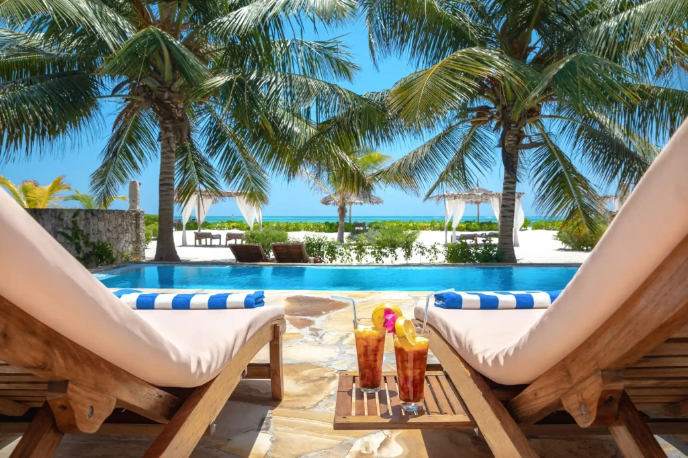
What time zone is Zanzibar in?
Zanzibar operates in the UTC+3 time zone, Eastern Africa Time (EAT). The time in Zanzibar matches that in Tanzania, Kenya, Saudi Arabia, Turkey, Ukraine, the European part of Russia, and several other countries.
When is the best time to visit Zanzibar?
If you prefer to avoid rain, plan your visit outside of April-May and November-December. These months can experience monsoons, and the weather may deteriorate. However, the rainy seasons have their advantages, such as fewer tourists and discounts at beach resorts. The busiest months, when Zanzibar sees the most tourists, are from July to October.
What languages are spoken in Zanzibar?
On the two largest islands of the archipelago, Zanzibar and Pemba, nearly all residents speak English. Swahili is the second official language.
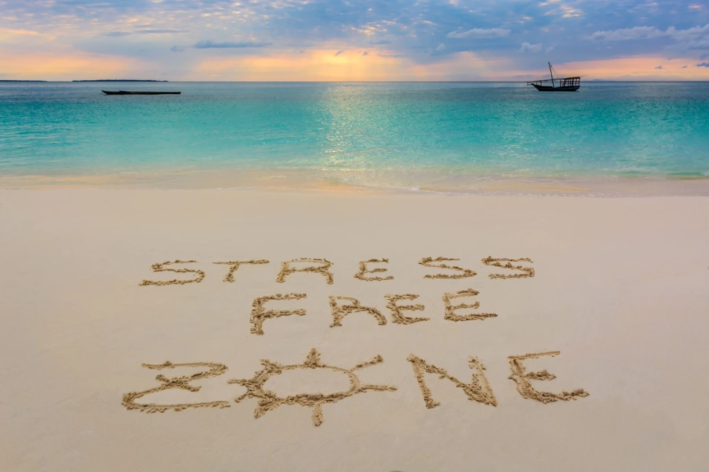
Are the residents of Zanzibar friendly?
Zanzibar is a peaceful place with friendly people. Being part of Tanzania, Zanzibar is one of the world’s safest tourist destinations. The main island's residents are known for their smiles, openness, and friendliness.
What should you be cautious about in Zanzibar?
Crimes against tourists are extremely rare in Zanzibar. Thefts are not common. You might encounter persistent vendors offering to sell anything from bracelets to spice sets. A polite refusal is usually accepted with understanding. Cultural norms influenced by Islam impose some restrictions. It's best not to wear swimsuits or go shirtless outside of beaches, and avoid public displays of affection. And during the holy month of Ramadan, it is inappropriate to eat, drink, or smoke in public. Demonstrating same-sex relationships might also lead to misunderstandings and even issues with the police.
What currency is used in Zanzibar?
US dollars are widely accepted in Zanzibar, especially by hotels and tour operators. The national currency, Tanzanian shillings, is used in shops, restaurants, and taxis. Banks, currency exchange services, and ATMs are available on the main island. Although, ATMs dispense only shillings.
Do you need a visa for Zanzibar?
A tourist visa for Tanzania is required to visit Zanzibar. A step-by-step guide for the online visa application is available in our article about entry documents. No special vaccinations are necessary before traveling to Zanzibar. For more about vaccinations and diseases that might concern you, refer to our reassuring article on vaccinations for Tanzania. General travel planning advice can be found in our article with useful tips.
All content on Angelino Adventures is created with expert insights and thorough research, in line with our Editorial Policy.


Want to know more about Tanzania adventures?
Get in touch with our team! We've explored all the top destinations across Tanzania. Our Kilimanjaro-based adventure consultants are ready to share tips and help you plan your unforgettable journey.
 Tanzania Safaris
Tanzania Safaris
 Kilimanjaro and other mountains
Kilimanjaro and other mountains
 About Angelino Adventures
About Angelino Adventures
 Tanzania Islands
Tanzania Islands